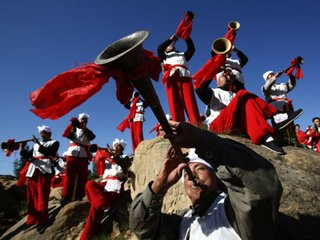

陕西省非物质文化遗产，传统民间音乐之一，白云山道教音乐由三部分组成，即经韵曲调、笙管音乐、打击乐。是以经韵曲调、笙管音乐、打击乐为主的独具特色的白云山道教音乐，并成为道教音乐四大流派中最具地方特色的一派。被誉为白云神韵，圣境仙乐。白云山道教音乐被誉为白云神韵，圣境仙乐。明万历三十六年(1608年)，北京白云观道士王真寿等，持陕西布政使司贴来白云山总理教务，首次把北京白云观的道教音乐传到白云山，因而白云山道教音乐具有古典音乐和宫廷音乐的双重成份，既古朴典雅，又庄重肃穆。清康熙年间，白云山道士苗太稔云游江南各地，广集名山道乐，因而，白云山道教音乐又具有婉转优美、清新秀丽的江南风格。在长期的演出活动中，道士们吸收佛教、晋剧、唢呐、民歌中的曲调和技巧，形成了以经韵曲调、笙管音乐、打击乐为主的独具特色的白云山道教音乐，并成为道教音乐四大流派中最具地方特色的一派。白云山道教音乐曾传播四方，誉满省城，至今这一神韵仙乐仍诵唱古观，经久不衰。
道教是中国本土产生的宗教。道教音乐和其它民间音乐一样，必然与我国古代的歌舞有某种联系，它的表演目的、表演场合及其表现形式，与古代巫觋(xí)占卜、祭祀与神勾通所表演的歌舞，在某些方面十分类似，这一点，在道教音乐为道教舞蹈伴奏时表现的更为明显。这说明，就借鉴而言，初始的道教音乐其渊源可追溯到春秋前的巫舞乐。但从东汉顺帝时张道陵创立五斗米道，至其子张衡，孙张鲁在大江南北传经布道，发展"天师道"，道教活动中经文都是直诵，即念经。道教的经文冗长，念经的节奏呆板，语音声调单调，缺乏生动性和吸引力，不利于弘扬道教。这种状况使道教经韵的音乐化成了道教发展的必然趋势。关于道教经韵音乐最早的文字记载见诸于南北朝时北魏嵩山道士冠谦之撰写的《云中新科之戒》。北魏神瑞二年(415年)，冠谦之为宣扬新道法，吸取儒家礼法仪式音乐伴奏的形式，仿效宫廷祭祀乐章的结构，创制了道教经韵乐章，明确提出了乐诵这一形式，自此，道教经文改直诵为乐诵，改念为唱。以后的唐代、两宋和明代是道教音乐的大发展时期。唐高宗、玄宗都曾令乐工创制道曲，宋代还设有主管全国道乐的云璈(áo)部，明成祖时更将道教音乐曲谱汇集成《大明御制玄教乐章》。皇家的参与使道教音乐具有明显的宫廷雅乐的特点。
白云山道教音乐活动是从明万历三十六年(1608年)开始的。明万历三十六年，白云山白云观建成后的第三年，全真道龙门派第六代、北京白云观道士王真寿持陕西布政使司贴来白云山作住持，主持道教事务，将北京白云观的道教音乐带到了白云山。他与同来的张真义、景真云、李守凤、赵常青广招弟子，诠释全真，讲习经文，传授经韵曲调，教练笙管吹奏和法器打击，组建笙管乐队，开展道教音乐活动。白云山现存一本本山道士屈圆恩1924年手抄的笙管曲牌工尺谱，此谱与后来见过的一本北京白云观雕版印工尺谱规格大小一模一样，曲牌名称及排列顺序完全相同，这更证明佳县白云山道教笙管曲牌有一部分来自北京白云观。
明代宫廷醮教活动盛行，当时宫廷"不斋则醮，月无虚日"。北京白云观地处京畿，观内道士常为宫廷做斋醮道场，届时还派道童充任"乐舞生"。受宫廷礼仪音乐的影响，其音乐自然就杂有宫廷音乐的成份，从北京白云观传来的佳县道教音乐也就具有皇家宫廷音乐的典雅、大气、隆重、庄严的风格特点。
清康熙年间，白云山道士苗太稔云游大江南北，广集名山道乐，充实了白云山道教音乐。道教有一种叫《施食》的经卷，各地全真道都念《铁罐施食》，佳县白云山道教属全真道，念的却是《三阳施食》。据传，《三阳施食》经卷及其曲调就是苗太稔从江南正一派道乐中学来的。因而白云山道教音乐，特别是经韵曲调，又兼具江南丝竹、苏杭吴腔委婉、俊美、清澈、秀丽的韵味。
旧时佳县有十二个较大的佛教寺院，各寺院有不少精通佛教音乐的高僧，如昌来、通秀、得胜、召弟、昌海、妙如等都是佛教笙管音乐著名演奏家。解放前有钱人家讲排场，丧事大操大办，同时请僧道两家做道场，称作僧道对坛，那时各地庙会多，祭祀活动频繁，仅佳县一县就有十一个清醮会，一个牛王会，一年要打十二个大醮，米脂、绥德、榆林、山西临县、兴县等地也请佛道两家去打醮做道场，僧道一起做法事是常事。这就为僧道相互交流、相互学习创造了有利条件。每次相遇，他们都在一起切磋技艺，互授曲牌。白云山道教笙管曲牌《西方赞》、《三身佛》、《五身佛》、《千身佛》等就是从佛教音乐中吸收过来的。
民国初年，受时代朝流的影响，佳县一些地方绅士请求陕西省有关部门允许白云山道士结婚。经批准，一些有钱的道士结婚成家，群众称其为火居道，部分贫寒道士则未能成婚。已婚道士和未婚道士分为两派，组成两个道乐班子，外出做法事各走各的。为了承揽演奏生意，赚取生活费用，两个道乐班子竞争十分激烈。竞争迫使他们必须丰富演奏曲目，提高演奏水平，以适应群众的欣赏喜好，满足群众的文化需求。在和人民群众、民间艺人及戏曲团体的接触中，他们不断从陕北民歌、民间吹打乐及戏曲音乐中吸收一些曲调，充实到道教音乐中。如《张生戏莺莺》、《观花》、《小娘儿上坟》就是陕北民歌器乐化了的道教笙管曲牌;《得胜回营》、《跌落金钱》等则是从陕北唢呐曲牌中移植到道教音乐中的;而《鬼扯腿》、《急毛猴》等又是从晋剧曲牌中引进的。这种交流、吸收和借鉴，给道教音乐注入了生机和活力，大大丰富和发展了白云山道教音乐。
任何一种艺术都会随着社会、历史、政治、经济、文化的变革而时沉时浮，时兴时衰。民国初年，混源教、瑶池道与国民党驻佳县军队军官勾结，借口白云山道士取妻成家，违犯全真道清规戒律，在庙会期间驱逐成家道士，剥夺道士的宗教活动权，严重干扰了白云山道观的宗教活动和道教音乐活动。民国七年(1918年)，白云山白云观道士联合一些地方绅士又夺回了宗教活动的领导权。1959年，混源教、瑶池道均定性为反动会道门，被政府取缔。此其间，1955年，由道士马至发、马思忠、崔圆泉、康至恭、张明贵、张至祺等六人，组成白云山道教笙管乐队，参加了陕西省第二届民间艺术会演，演奏了《笙管曲牌联奏》，获集体演奏一等奖;管子吹奏者马至法获个人吹奏一等奖。这次演奏大大激发了道士们的演奏热情，促进了道教音乐的发展。1963年，政府停止了白云山的庙会及道教活动，道士下山，回村务农。此后的整个文革期间，白云山道教音乐再无声息。1979年，在佳县文化馆的帮助下，白云山重新组建了道教笙管乐队，排练了节目，在榆林地区民间文艺调演大会上进行了演出，受到观众的热烈欢迎。时隔多年的这次公开演出，使人们开始正确区分宗教与封建迷信，重新审视、理智对待白云山道教音乐这一珍奇艺术。1980年，佳县人民政府贯彻党的宗教信仰自由政策，恢复正常的宗教活动，为道士创造了演奏道教音乐的有利氛围和良好环境。道士又重新上山进行宗教活动，白云山道教音乐又得以传承、沿续。
1、是道教的外向行为表现，道教斋醮科仪活动的产物。作为表达宗教信仰，宣扬教理、教义的一种重要手段，它与斋醮科仪紧密结合，具有浓厚宗教色彩和显明的道教文化特征。
2、是一个容量博大的文化载体，由南北两地的道教音乐组合而成，在与陕北民歌、陕北民间吹打乐、晋剧音乐的交流、兼融中丰富、发展，具有民族传统文化形成中共有的多元性特征。
3、在民间音乐中极为少见，由于流传的道派、地域不同，在道教音乐中，它又与其它道观道教音乐的内容、形式、旋律、风格以及乐器配制等均有不同，它既不同于全真教通用的《全真正韵》又不同于带有江南丝竹、苏杭吴腔音乐风格的南方正一道音乐，应属仅流传于本区域的"地方韵"，是民族文化中的珍稀品种，因而具有珍稀性特征。
4、多在庙宇、经堂、斋坛前演出，具有演出环境的特殊性特征。
5、在道教科仪和民俗祭祀活动中演唱演奏，依赖道教活动和民俗活动生存、发展，具有顽强的依赖生存性特征。
6、乐器特别，曲牌古雅，音色清脆悦耳，令人心旷神怡，如入仙境，具有很高的聆赏性。
白云山道教音乐中的大部分几乎是原生态地被传承下来，它是古老的，少见的道教音乐和民族民间音乐遗存。它能在历代为数不多的道士中传承至今，说明这一中华民族传统文化瑰宝顽强的生命力。它流传于宫观道院，上入皇宫，下到民间，影响着历代人们的信仰和行为，影响着整个社会生活，并对中国传统音乐产生着深刻的影响，发掘、抢救、保护它对研究道教音乐史和民族文化史具有十分重大的意义。